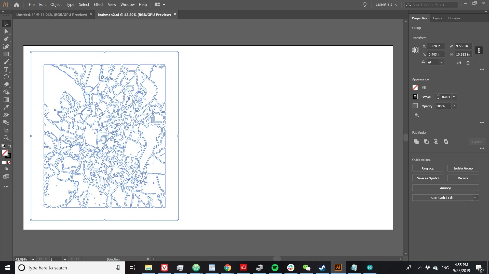
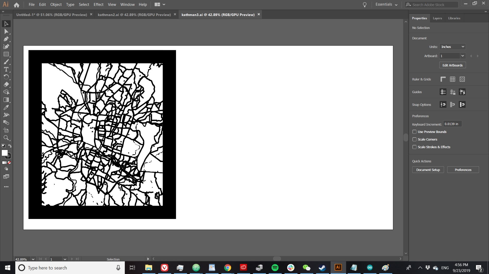

For this assignment, we had to make something on the laser cutter. This was a double-project for me, because I knew nothing about either laser cutters or Adobe Illustrator, which is what laser cutter projects (at least at ITP) run on.
At first, I was considering trying to draw something on Adobe Illustrator, but my friend who's a designer said that was a terrible idea and that I would just be better off importing designs that I wanted to cut. I briefly considered making a pattern that was a skull on one side and a face on the other, inspired by this video, but then I got the idea for one of those laser-cut maps you see all over the. I'd always thought those were cool, and then I'd have something to hang up in my apartment for once.
It turns out that not only are there guides for this, but that epilog lasers (which is the brand our laser cutter is) actually has its own guide to cutting engraving and vector cutting maps. It took me about an hour to figure out image trace, expand, and all the other stuff I had to do to get a printable map, but I finally had one. I chose Kathmandu, which is the first city I really lived in when I started traveling. I ended up with two files in Adobe Illustrator, one for cutting and one for engraving.
 Honestly, that was the easy part. Next I had to find the right materials and settings that would make the map actually look good when engraved. I found some thin pieces of nice-looking wood in the scrap pile, but first I wanted to prototype the design on cardboard.
Comments? Questions? Concerns? Email me here!